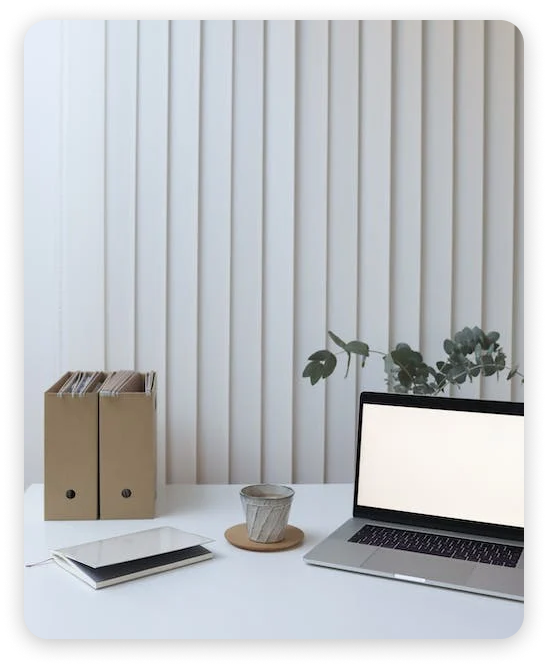

<div class="container-info" id="about">
  <div class="about-container">
      
      <div class="about-info">
        <h1>About Me</h1>
        <h2>I’m Junior Frontend Developer</h2>
        <p>
          I am a Junior Frontend Developer from Poland with a passion for creating
          responsive and aesthetically pleasing user interfaces. In my work, I
          emphasize continuous improvement of skills in the realm of modern web
          technologies and gaining practical experience through project
          implementation. I believe in the power of creativity and commitment, which
          is why I always strive to deliver valuable solutions for users.
          <br /><br />
          Outside of work, I find immense satisfaction in helping others, not just
          through words but also through actions. One of the ways I contribute to
          the community is by regularly donating blood, as I believe it's a tangible
          way to make a positive impact on the lives of those in need.
        </p>
      </div>
  </div>
</div>
